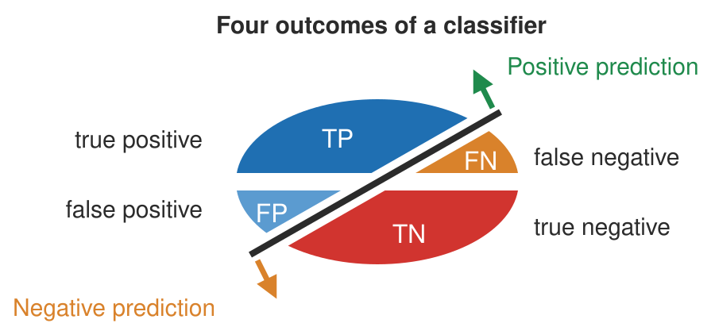

Evaluation#
Losses, classification metrics, cross-validation, stability, and metrics for text and ranking.
About this chapter
Two questions run through this chapter: what number to optimize, and how to estimate it honestly. The first sections answer the first question. Losses define risk, the expected loss, and each loss has its own optimal classifier. The measures built on the four outcomes of a binary prediction (true and false positives and negatives) differ only in what they divide by.
Cross-validation and the resampling methods under stability answer the second question by reusing the same data for fitting and testing. The last sections list model-selection criteria and the metrics used for text generation and ranking.
Chapter outline: 8 sections
- LossesRisk is the expected loss over the data distribution.
- Measures1 interactive1 figureEvery measure is a ratio of counts from the four outcomes.
- Comparing two things
- Cv1 interactiveCross-validation estimates test error without a separate test set: fit on part of the data, test on the rest, rotate, and average.
- StabilityStability asks how much the result changes under perturbation, either from randomness in the algorithm or from resampling the data.
- Other considerationsBesides its error, a model is judged by its computational cost and how interpretable it is.
- NLPGenerated text is scored against references.
- RankingRanking metrics reward putting relevant results near the top.
Losses#
Risk is the expected loss over the data distribution. The 0-1 loss counts mistakes but is hard to minimize directly, so training uses smooth losses like cross-entropy.
define a loss function \(\mathcal{L}\)
0-1 loss: \(\vert C-f(X)\vert\) - hard to minimize (combinatorial)
\(L_2\) loss: \([C-f(X)]^2\)
risk = \(E_{(x,y)\sim D}[\mathcal L(f(X), y) ]\)
optimal classifiers
Bayes classifier minimizes 0-1 loss: \(\hat{f}(X)=C_i\) if \(P(C_i\vert X)=\max_f P(f\vert X)\)
KNN minimizes \(L_2\) loss: \(\hat{f}(X)=E(Y\vert X)\)
classification cost functions
misclassification error - not differentiable
Gini index: \(\sum_{i \neq j} p_i q_j\)
cross-entropy: \(-\sum_x p(x)\: \log \: \hat p(x)\), where \(p(x)\) are usually labels and \(\hat p(x)\) are softmax outputs
only penalizes target class (others penalized implicitly because of softmax)
for binary, \(- p \log \hat p - (1-p) \log (1-\hat p)\)
Measures#
Every measure is a ratio of counts from the four outcomes. Recall, specificity and the false positive rate divide by the true class counts P and N. Precision and negative predictive value divide by the number of predictions of each kind. Cohen’s kappa, under concordance, corrects the agreement between two raters for the agreement expected by chance.
goodness of fit - how well does the learned distribution represent the real distribution?
classification of a test dataset produces four outcomes – true positive, false positive, true negative, and false negative


Fig. 56 Figure 1. The four outcomes of a binary classifier. The top half is the actual positives and the bottom half the actual negatives. The diagonal line is the classifier’s decision: everything above it is predicted positive (TP, FP) and everything below it negative (FN, TN).#
accuracy-based
accuracy = (TP + TN) / (P + N)
correct classifications / total number of test cases
balanced accuracy = 1/2 (TP / P + TN / N)
denominator is total pos/neg
recall = sensitivity = true-positive rate = TP / P = TP / (TP + FN)
what fraction of the real positives do we return?
specificity = true negative rate = TN / N = TN / (TN + FP)
what fraction of the real negatives do we return?
false positive rate = FP / N \(= 1 - \text{specificity}\)
what fraction of the predicted negatives are wrong?
fraction is total predictions
precision = positive predictive value = TP / (TP + FP)
what fraction of the prediction positives are true positives?
negative predictive value = TN / (FN + TN)
what fraction of predicted negatives are true negatives?
F-score is harmonic mean of precision and recall: 2 * (prec * rec) / (prec + rec)
NRI (controversial): compares 2 model’s binary predictions
curves - easiest is often to just plot TP vs TN or FP vs FN
roc curve: true-positive rate (recall) vs. false-positive rate
perfect is recall = 1, false positive rate = 0
precision-recall curve
summarizing curves
AUC: area under (either one) of these curves - usually roc
concordance = inter-rate reliability
exact concordance - percentage where cohort is in total agreement (i.e. accuracy)
Cohen’s kappa coefficient - 0 is uncorrelated, 1 is perfect, negative is inverse correlation
\(\kappa \equiv \frac{\cblue{p_{o}}-\corange{p_{e}}}{1-\corange{p_{e}}}=1-\frac{1-\cblue{p_{o}}}{1-\corange{p_{e}}}\)
\(\cblue{p_o}\) is relative observed agreement and \(\corange{p_e}\) is chance expected agreement
weighted kappa coefficient - used when ordering for predicted labels (being off by more is given bigger weight)
Comparing two things#
odds: \(p : \text{not }p\)
odds ratio is a ratio of odds
Cv#
Cross-validation estimates test error without a separate test set: fit on part of the data, test on the rest, rotate, and average. Because the folds share data, the estimates are correlated.
cross validation - don’t have enough data for a test set
properties
not good when n < complexity of predictor
because summands are correlated
assume data units are exchangeable
can sometimes use this to pick k for k-means
data is reused
types
k-fold - split data into N pieces
N-1 pieces for fit model, 1 for test
cycle through all N cases
average the values we get for testing
leave one out (LOOCV)
train on all the data and only test on one
then cycle through everything
random split - shuffle and repeat
one-way CV = prequential analysis - keep testing on next data point, updating model
ESCV - penalize variance between folds
regularization path of a regression - plot each coeff vs. \(\lambda\)
shows when features get pushed to 0
for OLS (and maybe other linear models), can compute leave-one-out CV without training separate models
Stability#
Stability asks how much the result changes under perturbation, either from randomness in the algorithm or from resampling the data.
computational stability
randomness in the algorithm
perturbations to models
generalization stability
perturbations to data
sampling methods
bootstrap - take a sample
repeatedly sample from observed sample w/ replacement
bootstrap samples has same size as observed sample
subsampling
sample without replacement
jackknife resampling
subsample containing all but one of the points
Other considerations#
Besides its error, a model is judged by its computational cost and how interpretable it is. The model-selection criteria at the end (\(R^2_p\), \(C_p\), AIC, BIC, PRESS) score fits of different sizes, as in the penalty that adjusted \(R^2\) adds for the number of parameters.
computational cost
interpretability
model-selection criteria
adjusted \(R^2_p\) - penalty
Mallow’s \(C_p\)
\(AIC_p\)
\(BIC_p\)
PRESS
NLP#
Generated text is scored against references. BLEU, a number between 0 and 1, measures how similar a machine translation is to a set of high-quality reference translations; ROUGE, BERTScore and BLEURT are used the same way.
BLEU (BiLingual Evaluation Understudy) is a metric for automatically evaluating machine-translated text. The BLEU score is a number between zero and one that measures the similarity of the machine-translated text to a set of high quality reference translations
ROUGE, BLEU
BERTScore, BLEURTScore
Ranking#
Ranking metrics reward putting relevant results near the top. DCG divides each result’s relevance by a log of its position.
mean reciprocal rank
normalized discounted cumulative gain (NCDG)
discounted cumulative gain: \(\sum_{i=1}^p \frac{\cblue{r e l_i}}{\corange{\log _2(i+1)}}\), where \(\cblue{rel_i}\) is usually binary and denominator emphasizes putting higher relevance results first
normalized CDG normalizes this by the ideal (so just putting all ones in the numerator)
sometimes, when \(rel_i \in (0, 1)\) rather than binary, people use \(2^{rel_i} - 1\) to further incentivize relevances closer to 1
Key ideas
Risk is the expected loss; the 0-1 loss is what we care about for classification but is hard to minimize, so models are trained on smooth losses like cross-entropy.
Every classification measure is a ratio of TP, FP, TN and FN; recall and specificity divide by the true class counts, precision by the number of positive predictions.
An ROC curve traces recall against the false positive rate over all thresholds, and the AUC summarizes it in one number.
Cross-validation reuses the data to estimate test error; its fold estimates are correlated, and it breaks down when n is small relative to the complexity of the predictor.
The bootstrap, subsampling and the jackknife measure how stable a result is under perturbations of the data.